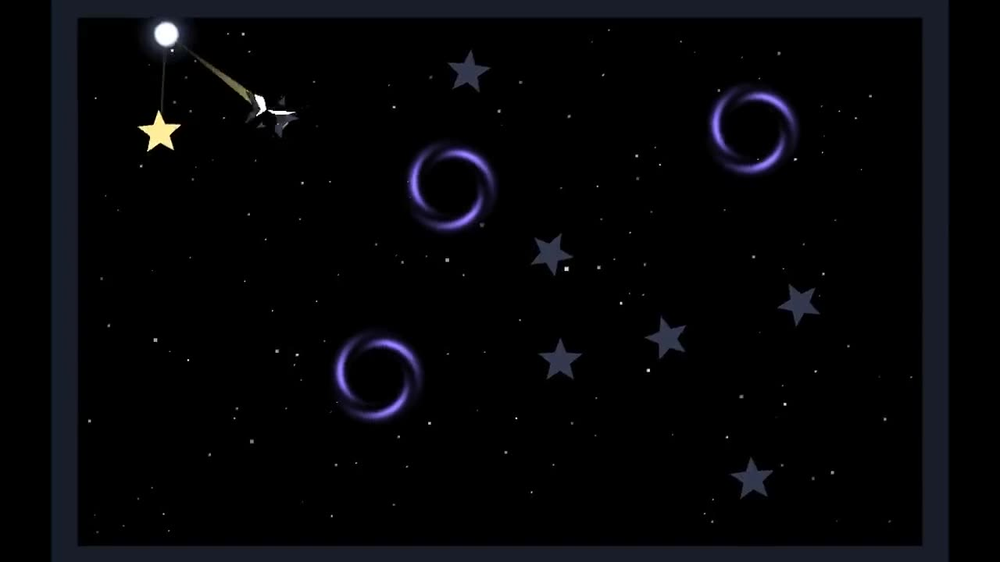

Lodestar
Roll-a-Ball without the keyboard: you send stars, and a wandering light rolls after them to draw a constellation.
The brief
One week, for a Unity course. I set myself one rule: make a game I hadn't played before.
Play it

Loads the full game here (about 35 MB). Plays on computer, phone or tablet.How it plays
Click anywhere and a star flies out from the wanderer and settles where you pointed. The wanderer rolls after it — with momentum, so it overshoots, bounces off the walls and keeps rolling after the star goes out.
Roll through every point to light the constellation. Avoid the voids. You have eight stars; reach a star in time and you get it back. Every sky is scattered from a seed, and the constellation you draw — the order you lit it in — is named from the same seed.
Indirect control
You never push the wanderer. You place a target, and it chases. The question each click asks is where the wanderer will be when the star burns out.